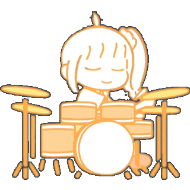

Nijika Ijichi
Nome artístico: Nijika
Nijika Ijichi é a baterista e líder da Kessoku Band, uma pessoa cheia de energia, otimismo e determinação. Ela sempre sonhou em formar uma banda de sucesso e, ao longo de sua jornada, demonstrou ser uma líder nata, sempre buscando motivar suas colegas a alcançar seus objetivos. Foi ela quem encontrou Bocchi e a convidou para se juntar à banda, mesmo sem saber o quanto a garota tímida era talentosa.
Desde pequena, Nijika teve contato com a música, principalmente através de sua irmã, que estava envolvida em um clube ao vivo. Inspirada por esse ambiente, ela se dedicou à bateria e logo percebeu que queria algo mais. A Kessoku Band foi formada não só pela paixão pela música, mas também pela vontade de criar algo significativo, especialmente para o café da sua irmã.
Como líder, Nijika tem o desafio de manter a banda unida e com uma mentalidade focada no sucesso, mas também precisa equilibrar sua vida pessoal, que inclui a responsabilidade com o café. Apesar das dificuldades, ela mantém uma atitude positiva e sempre tenta fazer o melhor para suas colegas, apoiando-as quando necessário.
Seu dia a dia na banda é repleto de altos e baixos, mas sua motivação nunca falha. Nijika é a âncora emocional da banda, e sua amizade com Ryo, Kita e Bocchi é fundamental para o sucesso da Kessoku Band, especialmente porque ela busca constantemente melhorar o ambiente dentro do grupo.